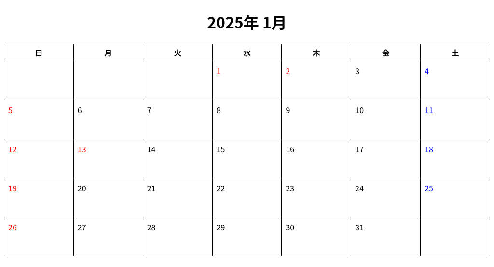

市販のマンスリー・カレンダーが 1200 円以上とあまりに高価すぎるので、gulp で自動作成するようにしました。
マンスリー・カレンダーを自動作成するための gulpfile.js は github に置いています。
スクリプトを実行すると、HTML 形式で、2025 年の 1 月から 12 月までのマンスリー・ダイアリーを、dist サブ・ディレクトリに自動作成します。
HTML で作成されるので、書式が気に入らなかったり、装飾がもう少し欲しいという場合は、HTML や CSS を使ってお好きに変更してください。
左の画像は、自動作成された HTML を Web ブラウザに表示させ、スクリーンショットを撮り、それをこの日記に貼り付けています。
画像では祝日の日付が赤に変更されています。ですが、生成された HTML では祝日は赤くなりません。祝日の td 要素に class="holiday" を追記すると、その日の日付が赤くなります。
また gulpfile.js の 9 行目に 2025 と、作成対象年をハードコードしています。この 2025 を好きな年に変更すると、変更したその年 1 年分の、各月分のマンスリー・カレンダーを自動作成することができます。
リポジトリでは 2025 年のマンスリー・ダイアリーを、2 ヶ月単位でまとめた HTML と PDF を、それぞれ 6 ファイルずつ公開しています。ダウンロードしてご自宅や、コンビニ等でプリントすれば、そのままお使いいただけます。
詳細は github のリポジトリを参照してください。サポートはリポジトリの Discussions にて行う予定にしてます。質問があればそちらにお願いします。